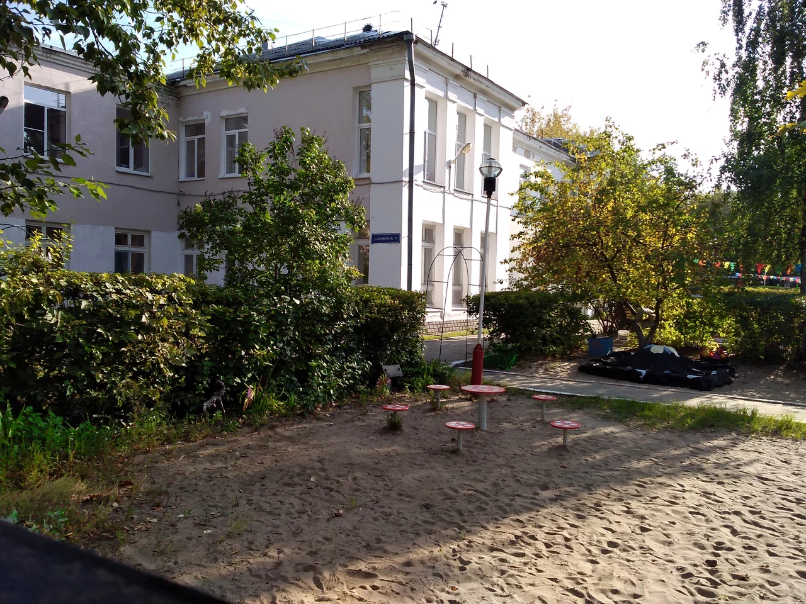

МБДОУ
Детский сад №6
"Светлячок"
Детский сад №6
"Светлячок"
В детском саду имеются все условия для комфортного пребывания и
всестороннего развития личности ребенка.
Для детей создана атмосфера домашнего уюта.
В ДОУ работает дружный и слаженный коллектив. Все педагоги постоянно повышают свою профессиональную квалификацию.
Одним из основных направлений педагогической деятельности является нравственно-патриотическое воспитание, воспитание настоящего гражданина России.
В ДОУ работает дружный и слаженный коллектив. Все педагоги постоянно повышают свою профессиональную квалификацию.
Одним из основных направлений педагогической деятельности является нравственно-патриотическое воспитание, воспитание настоящего гражданина России.
Дети в нашем садике:
1
1,5-2 года: самостоятельный
Самостоятельный в бытовых вопросах: жизнь без подгузников, сам держит ложку и ест все,
спит в обеденное время и вовремя ложится вечером.
2
1,5-2,5 года: радуется
каждому моменту
Улыбчивые воспитатели, качественная мебель,
площадка, игрушки, красивая сервировка - глаз радуется!
3
2-3 года: ответственный
Берет на себя ответственность: знает, как ухаживать за растениями,
помогает родителям, принимает решения.
Умеет дружить с детьми разных возрастов и объяснять свою позицию взрослым и другим детям.
Умеет дружить с детьми разных возрастов и объяснять свою позицию взрослым и другим детям.
4
3-4 года: владеет своим
телом и здоров
Получает удовольствие от физической активности в спортивном зале,
на футбольной площадке, во время йоги, или айкидо.
5
5-7 лет: экспериментирует
Обладает развитой фантазией, образным и пространственным мышлением.
Он с любопытством смешивает в нашем экспериментариуме все компоненты в ожидании открытий.
6
5-7 лет: умеет ценить и
создавать прекрасное
Каждый день строит, рисует, и даже готовит для себя и своих любимых родителей.